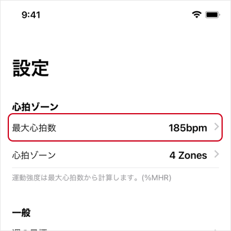
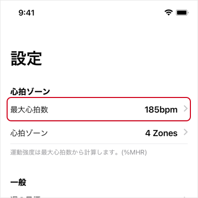

ヘルプ
運動強度と最大心拍数について
運動強度は、最大心拍数との比率による方法を利用しています。(%HRmax, %MHR)
最大心拍数は、設定 > 心拍ゾーン > 最大心拍数 で変更が可能です。

年齢から最大心拍数を推定する場合、以下の計算式にて算出しています。
211 - (0.64 × 年齢)
上記の式を使わず、最大心拍数を直接入力することも可能です。
「最大心拍数」の値の箇所をタップすると、キーボードが表示されます。

運動強度は、最大心拍数との比率による方法を利用しています。(%HRmax, %MHR)
最大心拍数は、設定 > 心拍ゾーン > 最大心拍数 で変更が可能です。

年齢から最大心拍数を推定する場合、以下の計算式にて算出しています。
211 - (0.64 × 年齢)
上記の式を使わず、最大心拍数を直接入力することも可能です。
「最大心拍数」の値の箇所をタップすると、キーボードが表示されます。